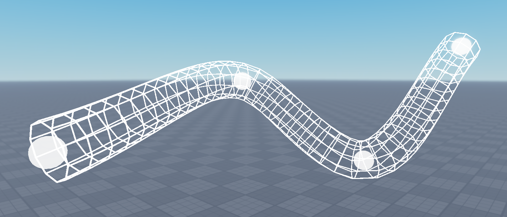

Creates Catmull-Rom splines.
The Catmull-Rom spline (CatRom) is a cousin of the popular Bézier curve that passes through all of its control points.
How to use
The CatRom constructor takes 3 arguments:
points: An array of Vector2s, Vector3s, or CFrames.alpha[optional]: A number (usually) in [0, 1] that determines the "parametrization" of the spline; defaults to 0.5.tension[optional]: A number (usually) in [0, 1] that determines how loose the spline is; defaults to 0.
The default alpha of 0.5 is the only way to avoid cusps and loops, as shown in this paper.
API
The unitSpeed argument in each Solve method determines whether the calculation uses a unit-speed parametrization of the spline. A unit-speed parametrization (also called an arc length parametrization) has a constant speed of 1, which yields equally spaced points given equally spaced times. This is often visually desirable but increases computation time.
CatRom.new(points: array, alpha: number?, tension: number?)
Creates a new Catmull-Rom spline from a list of Vector2s, Vector3s, or CFrames.
CatRom:SolvePosition(t: number, unitSpeed: boolean?)
Returns the position of the spline at time t.
CatRom:SolveCFrame(t: number, unitSpeed: boolean?)
Returns a CFrame at position SolvePosition(t) that faces in the direction of SolveTangent(t).
CatRom:SolveRotCFrame(t: number, unitSpeed: boolean?)
Returns a CFrame at position SolvePosition(t) with orientation interpolated between the previous and next control points (provided your control points are CFrames). The interpolation uses spherical quadrangle interpolation.
CatRom:SolveVelocity(t: number, unitSpeed: boolean?)
Returns the velocity of the spline at time t.
CatRom:SolveAcceleration(t: number, unitSpeed: boolean?)
Returns the acceleration of the spline at time t.
CatRom:SolveTangent(t: number, unitSpeed: boolean?)
Returns the forward-facing, unit-length tangent vector at time t.
CatRom:SolveNormal(t: number, unitSpeed: boolean?)
Returns a unit-length vector at time t that is perpendicular to the spline and points in the direction of curvature. Returns Vector3.new(nan, nan, nan) when the curvature is 0.
CatRom:SolveBinormal(t: number, unitSpeed: boolean?)
Returns the cross product of SolveTangent(t) and SolveNormal(t).
CatRom:SolveCurvature(t: number, unitSpeed: boolean?)
Returns the curvature of the spline at time t.
CatRom:SolveLength(a: number?, b: number?)
Returns the arc length between the points at times a and b.
CatRom:PrecomputeArcLengthParams(numIntervals: number?)
Computes a lookup table that makes unitSpeed calculations faster but less accurate.
Performance Tips
1. Solving with unitSpeed
If you are calling many Solve methods with unitSpeed true, you should call PrecomputeArcLengthParams() immediately after construction. This will make your unitSpeed calls less accurate but cheaper to compute. The accuracy can be further tuned using the numIntervals argument; lower is faster and less accurate, higher is slower and more accurate (defaults to 16).
2. Repeated inputs
If you are calling many methods on the same input like so
local t -- number in [0, 1]
local catRom -- a CatRom object
catRom:SolvePosition(t)
catRom:SolveVelocity(t)
catRom:SolveTangent(t)
then it is faster to instead do
local t -- number in [0, 1]
local catRom -- a CatRom object
local spline, splineTime = catRom:GetSplineAtTime(t)
spline:SolvePosition(splineTime)
spline:SolveVelocity(splineTime)
spline:SolveTangent(splineTime)